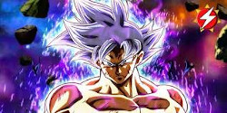
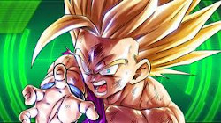
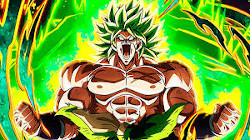
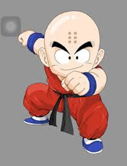
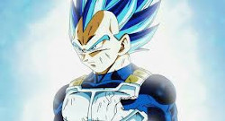

Es uno de los personajes principales que aparece en el manga y anime de Dragon Ball y sus correspondientes secuelas. Es un namekiano que surgió tras ser creado en los últimos momentos de vida de su padre, siendo su actual reencarnación. Aunque en un principio fue el archienemigo de Son Goku, con el paso del tiempo fue haciéndose menos malvado hasta finalmente convertirse en un ser bondadoso y miembro de los Guerreros Z. A través del tiempo, también comenzó a tomarle cariño a su discípulo Son Gohan, a quien veía como una especie de "vástago" y formando un lazo de amistad con este.
La característica más notable en Piccolo es su tono de piel, que es de color verde. Tiene unas orejas muy grandes y unas antenas en lo alto de su cabeza. En los brazos y piernas lleva unas especies de círculos de color rosa (amarillo en el manga), cuyo contorno es de color rojo. De pequeño usaba una túnica morada con mangas largas de color orquídea y el kanji de 'Demonio ' de su padre en la túnica. Al crecer, lleva un dogi de color morado, cinturón de color azul (rojo en el manga y algunas películas) además de unos zapatos marrones. También usa capa blanca y un turbante color nieve con un tope púrpura que llevan peso extra encima, emulando la camiseta y aditamentos de Kami que utilizaba Goku. Se suele quitar la capa y el turbante cuando va a pelear en serio ademas en el episodio 125 de Dragon Ball Z se le ha visto usar una ropa de civil: una camisa manga larga morada y una amarilla sobre ésta con pantalones grises y una gorra azul, blanca y roja.
Piccolo fue originalmente villano, al igual que su padre. Durante el Torneo de Artes Marciales 23, él casi no muestra misericordia a sus oponente, como cuando rompe todos los miembros de Goku mientras se reía con sadismo, creyendo que era necesario después de lo que Goku había hecho a su padre.
A pesar de esto, él poseía un sentido del bien, una vez salvo una madre y su hijo de los escombros durante una tormenta. Más tarde, cuando él y Son Goku van a la batalla Raditz, Piccolo empezó a mostrar más honor durante la batalla, incluso conmemorando a Goku en su noble sacrificio y durante la batalla contra Nappa, elogió la valentía y las tácticas de los otros Guerreros Z. A pesar de su cambio gradual hacia una actitud heroica, Piccolo todavía puede ser grosero y confrontacional hacia las personas que estime tontas, inferiores o innecesariamente violentas, además es muy directo y honesto al dar sus opiniones sobre una situación o un individuo, aunque se pueden considerar muy despectivo. En el doblaje latinoamericano, se suele utilizar la palabra "sabandija" para denotar ésto.
Después de entrenar y hacerse amigo y mentor de Gohan, su personalidad rápidamente cambia a medida que el saiyan híbrido toma su tiempo para hablar con él y tener conversaciones normales. Durante la batalla con Nappa, Piccolo va tan lejos como para sacrificar su vida para salvar a Gohan, indicando cómo su amistad lo había cambiado para siempre. Piccolo ha declarado que Gohan fue la primera persona en no verlo como un monstruo y estaba orgulloso de llamarlo su amigo.
|  |
 |
 |
 |
 |